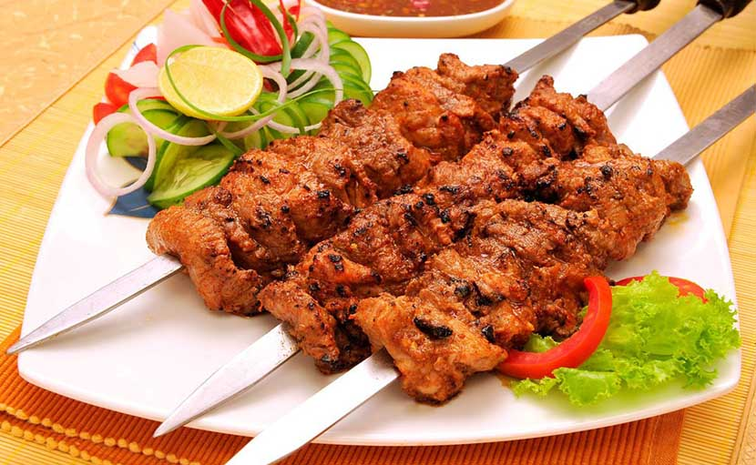
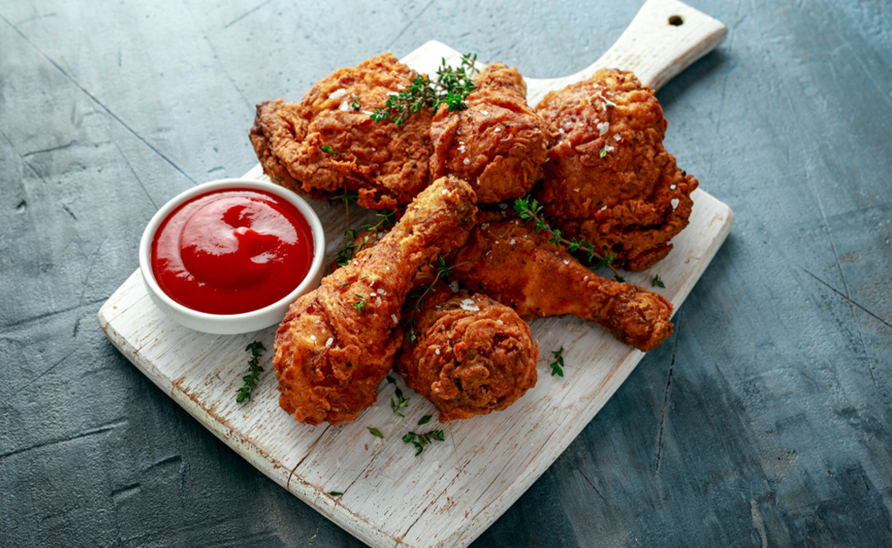

1.Mutton Tehari

Tehari is our favorite! Instead of buying it from outside, you can make delicious mutton Tehari at home in a healthy way. But many people do not know how to make perfect mutton Tehari like a restaurant! You can cook this dish quickly on any occasion or special day. Along with green pepper, salad and a slice of lemon, it will freeze completely! Then check out the complete recipe of Mutton Tehari.
Read More
2.Mutton Kebab

Kebabs are one of my favorite dishes. If you get in front, keep eating! And if there is bread or parota, then it's heaven! You can easily make Mutton Kebab at home. Let's learn how to make delicious mutton kebabs.
Read More
3.Spicy Fried Chicken

Chicken fries are our favorite, right? If you go to a restaurant, this item is eaten more or less! For those who like to eat Jhal like me, they like spicy fried chicken a little more! Crispy chicken fries are eaten at home, but have you tried spicy fried chicken? Today, see how to make crispy chicken fries very easily with few ingredients.
Read More